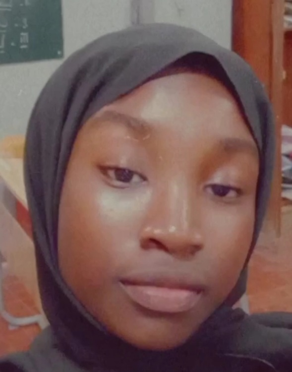

AICHA COURA NGOM

06/10/2007 - 15ansDakar - Guediawaye - Cité Alioune Sow Villa n192777956005/ngomaichacoura@gmail.com
FORMATIONS
Novembre2022 -Avril2023:Formation au codage et aux TICs organisée par WIA et ATOSJanvier2023 : Formation bibliothécaire2022 - 2023: Seconde SA
2021 - 2022:Brevet de Fin d'Etudes MoyenLycée d'Exellence Mariama Ba2017 - 2018 :Certificat de Fin d'Etudes ElementaireGroupe Scolaire Keur Fakinette
COMPETENCES
Informatique :maitrise des logiciels Word,Excel ,Internet,Power Point et Google Slide,Notepad++,Paint, Base en Python et en HTMLlinguistique : Français ,Wolof ,Anglais ,Espagnol
EXPERIENCES PROFESSIONNELLES
2022-2023 :Ministre des Sports du gouvernement scolairetâches : décrassages matinaux-organisation d'olympiades inter-classes2019-2020 :Ministre de l'environnement2018-2019 :Adjoint Minitre de la Communication
COMPETENCES PROFESSIONNELLES
Ponctualité-Assiduité-Autonome -Sportive -Perfectioniste - Entrepreneuse
ACTIVITITES EXTRASCOLAIRES
Colonnies de vacances - Natation - Organisation d'évènements festifs et culturels
CENTRES D'INTERET
Natation- Decoration -Lecture -Jardinage - Fitness